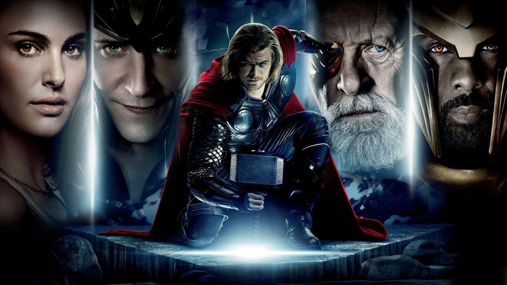

Iron Man (2008) - 8.5/10
.jpg)
A brilliant start to the MCU. Tony Stark's intelligence, sarcasm, and engineering mindset made him an instantly likable protagonist. I loved how he constantly improved his suits instead of simply accepting his powers. The story was logical, the humor worked well, and the action felt meaningful. The only part I didn't enjoy was the forced romance with the reporter. Overall, an excellent introduction to the MCU.
The Incredible Hulk (2008) - 7/10

A decent superhero movie with a good science-based story and solid action. Bruce Banner's struggle with controlling the Hulk was interesting, and the conflict with Abomination kept the movie engaging. While I enjoyed the overall story, it didn't connect with me as much as Iron Man. It's a good watch, but not one I'd revisit often.
Iron Man 2 (2010) - 8/10

A fun sequel that expanded the world of Iron Man while improving the suit, technology, and action. I enjoyed the introduction of new characters like Black Widow and Nick Fury, and Rhodey had a much stronger role this time. The discovery of a new element for the arc reactor was one of my favorite parts. While the character development wasn't as impactful as the first movie, the pacing was smooth, the humor landed well, and it was an enjoyable watch overall.
Thor (2011) - 7.8/10

A solid introduction to the mythological side of the MCU with beautiful visuals and an interesting world. I enjoyed Thor's character development and found Asgard surprisingly captivating. Loki quickly became the most intriguing character, and the story followed its own rules well, which made everything feel believable. While I liked it overall, it didn't leave as strong an impression on me as the Iron Man movies.